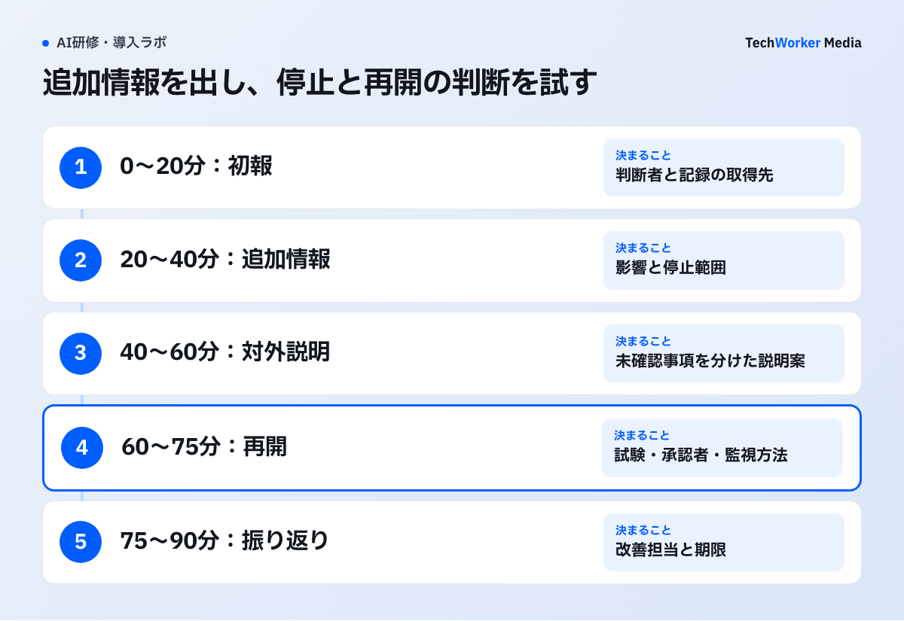

生成AIの事故対応は、机上演習で何を確かめればよいですか？
既存の連絡網、停止手順、証拠保全、対外説明がAI事故でも機能するかを、90分で確かめます。
生成AIの事故対応は、利用規程を読んだだけでは動きません。顧客へ誤った回答を送った、社外秘が指示文へ入った、AIエージェントが意図しない更新を実行した。その瞬間に、誰が止め、どこまで影響を調べ、顧客や経営へ何を伝えるかを、机上演習で確かめます。
ここでは、既存の連絡網、停止手順、証拠保全、対外説明が、AI事故でも機能するかを検証します。NCSCも、演習は既存計画を評価する場だと説明しています[7]。
以下の90分構成と「47件・12件」という数値は、編集部が作った架空の演習例です。CISAやTechWorkerの実績値ではありません。
CISAのAI机上演習は、AIシステムや接続先の機密性・完全性・可用性を損なう事象を扱いました。複数段階の事故で、情報共有と対応手順を検証しています[1]。社内演習で扱う事故の入口は、次の3つに分けます。
- 誤回答。根拠のない法令、古い料金、誤った納期を、顧客へ送る場面です。
- 情報漏えい。顧客名や未公開資料が、許可されていないAIサービスへ入力された場面です。
- 誤実行。AIエージェントが、メール送信、ファイル削除、権限変更などを予定外に実行した場面です。
MITRE ATLASは、AI事故に、性能劣化、脆弱性の悪用、設計時に受容していなかった影響を含めます[5]。セキュリティ侵害が確認できなくても、重大な誤作動で介入が必要なら記録対象です。
生成AI事故の机上演習は、どんな手順で進めますか？
役割を集め、入口を一つに絞り、90分を検知から復旧まで進め、詰まった手順を改善台帳へ移します。

進行記録は、追加情報を示した時刻、確認できた事実、未確認の項目、停止範囲、判断者、再開前の試験を別欄にします。47件と12件は架空の演習値のまま扱い、実際の事故件数として記録しません。
- 参加者を、事故時の役割で集めます。担当者だけでも、経営だけでも、演習は止まります。役割の一覧は、比較表にまとめます。ENISAの2026年版手引きも、演習目的に合う役割と関係者を参加させる考え方を示しています[4]。
- 事故の入口を一つに絞ります。三つを同時に投げると、混乱だけが残ります。最初の90分は一つに絞り、途中で新しい情報を小分けに提示します。CISAのCTEPには、演習計画、進行役、参加者の振り返り、事後報告のひな型が用意されています[6]。
- 90分を、検知、封じ込め、説明、復旧の順で進めます。以下は、編集部による進行案です。各段階の判断と振り返りまでを、一つの枠に収めます。
- 点数をつけず、詰まった箇所を改善台帳へ移します。見るのは知識量ではなく、どの情報を根拠に誰が判断したかという記録です。
- 責任者と期限を決め、手順を直した後に再演します。同じ論点を、別の想定で再演します。
手順3の90分は、次のとおり進めます。
- 0〜20分：初報を受け、対応開始の判断者と記録の取得先を確認する。
- 20〜40分：追加情報から影響を調べ、利用停止の範囲を決める。
- 40〜60分：未確認事項を分け、顧客・経営への説明案を作る。
- 60〜75分：再開前の試験、承認者、監視方法を決める。
- 75〜90分：詰まった手順を振り返り、改善担当者と期限を決める。
開始時に示すのは、「顧客から、AIが引用した資料が見つからないと連絡があった」という一報だけです。参加者は、誰が事故対応を開始し、出力と送信履歴をどこから取るかを答えます。
正解を当てる試験ではありません。現在の手順で、必要な事実へ辿り着けるかを見る時間です。
20分後に、「同じ指示文のひな型を使った回答が47件あり、うち12件が外部送信済み」と追加します。ここでは、利用停止の範囲を決めます。AI機能を全面停止するのか、該当ひな型だけを止めるのか、顧客対応を人手へ切り替えるのかです。停止の判断者と実行者が別なら、連絡が届くまでの時間も記録します。
次に、「入力文書へ個人情報が含まれ、提供事業者の記録への保存可否が未確認」と伝えます。個人情報、契約、セキュリティの担当が、何を確認しないと報告要否を決められないかを挙げます。
最後に、再開条件を決めます。指示文を直した、という説明だけでは足りません。誤答を再現する試験、送信前確認、影響を受けた47件の再確認、再発監視が必要です。
演習後は、参加者の発言を点数化するより、詰まった箇所を改善台帳へ移します。たとえば、次のような詰まりです。
- 最初の報告先が分からなかった。
- AI提供事業者側の記録保持期間が分からなかった。
- 送信済み顧客を一覧にできなかった。
- 停止権限が個人アカウントにしかなかった。
どれも計画の穴です。NIST SP 800-84は、机上演習を、計画が緊急時に実行可能か確かめる討議型の手段と位置づけます[2]。
評価表には、事故対応開始までの時間、影響対象を数えられたか、停止判断者へ届いたかを残します。対外文へ未確認事項を混ぜなかったか、改善項目に責任者と期限が付いたかも確認します。
生成AI事故の机上演習で、うまくいかない例にはどんなものがありますか？
三つの事故を同時に投げる、役割がそろわない、改善が意識の話で終わる、防御機能の証明と考える、が典型です。
- 三つの事故を同時に投げる。混乱だけが残ります。
- 担当者だけ、または経営だけで集まる。担当者だけを集めても、停止承認や顧客説明の判断で演習が止まります。経営だけでは、どの記録を見れば事実が分かるかを試せません。
- 改善項目を「意識を高める」で終わらせる。変更へ落とします。次のような例です。AI回答の送信履歴を顧客IDで検索できるようにする。提供事業者との契約と保存設定の責任者を決める。緊急停止手順を運用担当以外にも渡す。
- 再開条件を「指示文を直した」だけにする。誤答の再現試験や再発監視が抜けます。
- 机上演習を、防御機能が動く証明と考える。机上演習は事故対応計画を検証します。防御機能そのものが動くかは証明しません[7]。記録が取得できるか、権限を実際に止められるか、バックアップから戻せるかは、別の技術訓練で確かめます。
- 答えを知っている参加者で、夜間の対応を想定する。夜間や担当者不在時に、同じ速度で動けるとは限りません。
- 初回から、実在顧客の情報を使う。初回は、架空の案件と模擬記録で行います。
- 海外機関の定義を、日本の判断として使う。海外機関の定義・手順は、日本の報告義務や契約上の判断を置き換えません。公開前に、自社の契約、個人情報、事故報告の要件へ戻って確認してください。
90分が終わっても、研修は完了しません。見つかった穴が閉じたときに終わります。
演習の参加者は、それぞれ何を担いますか？
業務、AI運用、セキュリティ、法務、広報、最終責任者の6つの役割が、それぞれ別の判断を持ち寄ります。
| 役割 | 演習で担うこと |
|---|---|
| 業務責任者 | 影響を受ける顧客・業務を示す |
| AI運用担当 | 使用したモデル、指示文、検索拡張生成、外部機能の記録を持ち寄る |
| 情報セキュリティ担当 | 漏えい・侵害の範囲を調べる |
| 法務・個人情報担当 | 報告、通知、契約上の義務を確認する |
| 広報・顧客対応 | 説明文を作る。未確認情報を断定しない |
| 最終責任者 | 停止と再開を決める |
よくある質問
事故の入口を、誤回答、情報漏えい、誤実行の三つに分けます。最初の90分は、一つに絞ります。初回は実在顧客の情報を使わず、架空の案件と模擬記録を使います。途中で、新しい情報を小分けに提示します。
事故時の役割で集めます。業務責任者、AI運用担当、情報セキュリティ、法務・個人情報、広報・顧客対応、停止と再開を決める最終責任者です。担当者だけでは停止承認で演習が止まります。
十分ではありません。机上演習は計画を検証しますが、防御機能が動く証明にはなりません。記録の取得、権限の停止、バックアップからの復旧は、別の技術訓練で確かめる必要があります。
次の一歩は何から始めればよいですか？
誤回答、情報漏えい、誤実行のうち一つを選び、架空の案件で90分の演習を1回行うことから始めます。
- 事故の入口を一つ選び、架空の案件と模擬記録を用意します。
- 6つの役割の参加者を決め、90分の枠を取ります。
- 演習後に改善台帳をつくり、責任者と期限を決めます。
演習の設計や進行は、TechWorkerが一緒に整理します。ご相談ください。
根拠資料
資料確認日：2026年9月28日。本文中の手順例は編集部の提案で、導入効果の実測値ではありません。